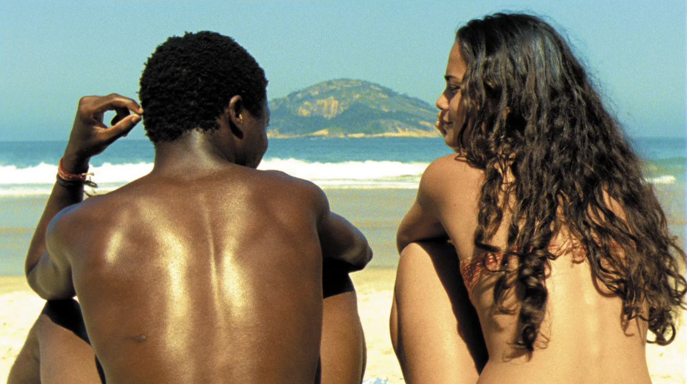
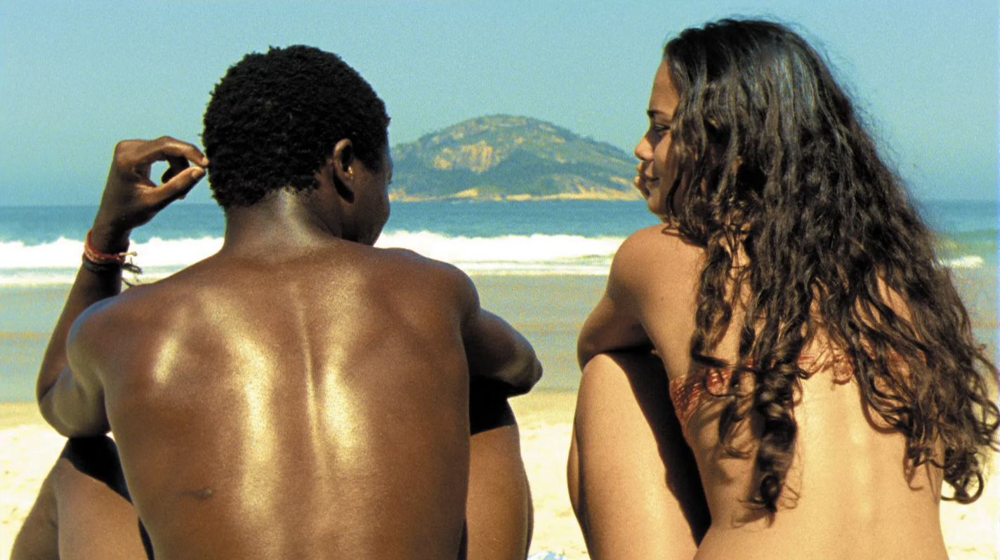

CITY OF
GOD
Country/ Countries: Brazil
Language: Portuguese, English, Serbian
Director: Fernando Meirelles, Kátia Lund
Starring: Alexandre Rodrigues, Phellipe Haagensen, Leandro Firmino Da Hora, Douglas Silva
Synopsis
TIn the poverty-stricken favelas of Rio de Janeiro in the 1970s, two young men choose different paths. Rocket is a budding photographer who documents the increasing drug-related violence in his neighbourhood. José "Zé" Pequeno is an ambitious drug dealer diving into a dangerous life of crime. Zé uses Rocket and his photos as a way to increase his fame as a turf war erupts with his rival, "Knockout Ned".
Insight on the film
City of God* effectively critiques globalisation not by any overt political message in the film,
but rather by creating its world and telling its story showing the violence of the favela, while
simultaneously making clear the root of that violence: the drug trade and isolation of the political
classes. The acquisition of wealth and power in the favela is tied directly to a violent drug trade,
itself a result of an increasingly interconnected world, and allowed to thrive in the favela by a
seemingly detached and disinterested government.
The film also uses photography in the telling of its story through freeze-frames and audio cues
(such as a camera shutter sound effect when introducing characters) which provides a documentary-style
feel, as if the narrator is presenting his recollection to us and using photographs as emphasis. This
adds to the impression of the film as a document of the favela’s experiences, presented to the audience
by someone who actually lived through it.
What I loved
The 1960’s section of the film is presented in much brighter colours, with open spaces and sunlight, and a more steady, sometimes static camera. As the film progresses through its timeline into the 1970s and 80s, there is much less light, the film gets darker and space becomes more and more confined, and the camera begins to move much more frantically, with quicker cuts, and in higher numbers than before (As described in Nagib 2004, p. 247). This progression highlights the pervasive and destructive nature of the violence prevalent in the favela, which is only worsening as time goes on and the drug trade becomes more contested and explosive, with no intervention from any political authority to stem the tide.
Brief on production
Director: “When I made the film it wasn’t supposed to be a hit. I financed it myself, with a low
budget, unknown actors, a first-time crew, editor, writers and director. It was really a bunch of
friends – talented friends – and we were doing the film because we liked the story.” “In Brazil at that
time you wouldn’t see films shot inside of favelas, there were just a few examples, and Brazilian
society wouldn’t know what was happening with a big part of the population. So the film in some way
revealed Brazil to Brazilians.”
Acting: the only professional actor with years of filming experience was Matheus Nachtergaele, who
played the supporting role of Carrot. Most of the remaining cast were from real-life favelas, and in
some cases, even the real-life City of God favela itself. Meirelles explained: "Today I can open a
casting call and have 500 black actors, but just ten years ago this possibility did not exist. In
Brazil, there were three or four young black actors and at the same time, I felt that actors from the
middle class could not make the film. I needed authenticity.”
Cinematography: The film's cinematography shifts from a golden hue in the first act, reflecting
Buscapé's romanticized view of the slums, to a darker, melancholic blue as the film progresses and the
slums become more dangerous.
Music of City of God
Reviews
Stills

 
